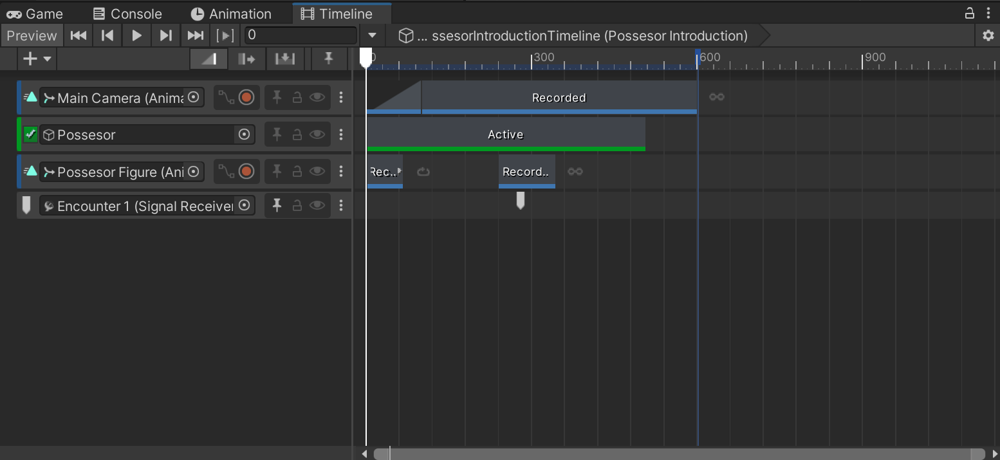
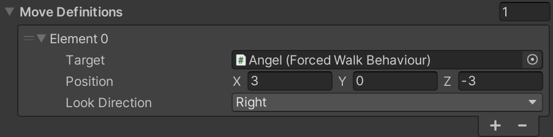
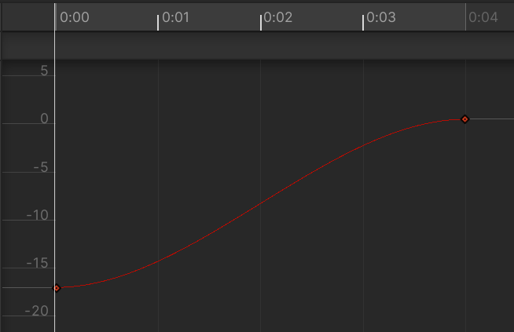
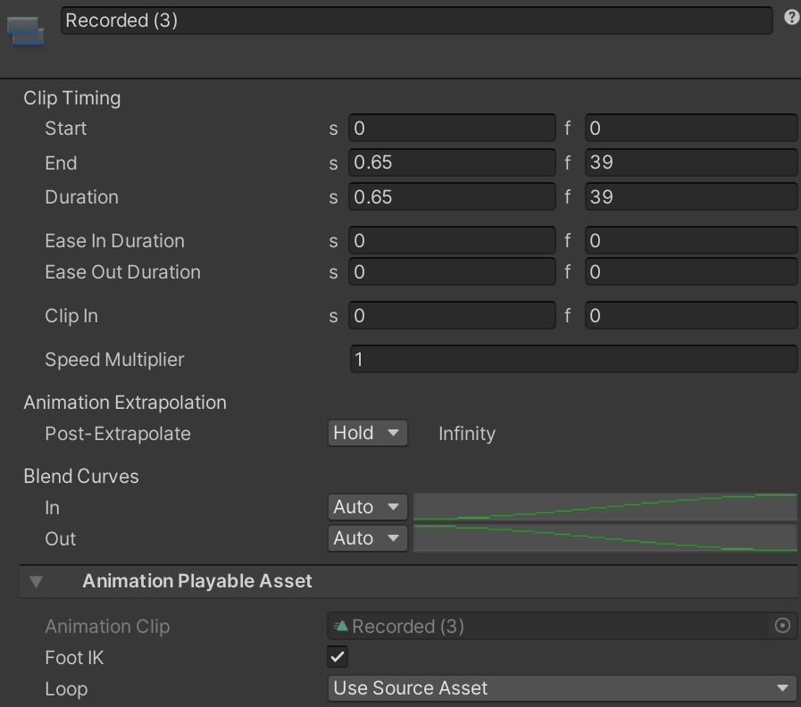

Creating Cutscenes
Use cutscenes in the game to override normal game behaviour. Cutscenes block player input, and disable enemies' state machines. Wikipedia defines cutscenes as such:
A cutscene is a sequence in a video game that is not interactive, interrupting the gameplay. Such scenes are used to show conversations between characters, set the mood, reward the player, introduce newer models and gameplay elements, show the effects of a player's actions, create emotional connections, improve pacing or foreshadow future events.
Cutscenes are represented by a Unity Timeline. Timelines can contain multiple tracks, that modify properties of scene objects over time. They can be used to create animations, move objects around, and even call functions on components!
Cutscenes should be constant, meaning object positions will never be relative to the positions before the cutscene. To overcome this issue, Cutscene Action will move characters from their previous position, to a specified initial position.
Important
Before the cutscene starts, make sure there are no spawned enemies in the scene. Spawned enemies cannot have a move definition. Their state machine will be disabled once the cutscene starts, and it might look weird.

Create a Cutscene
Create an empty game object, and give it an indicative name.
Add a trigger for the cutscene. More info in Adding Triggrs. Instead, you can also attach the cutscene to an existing
UnityEvent, such as Post Encounter Event.Add the Cutscene Action component, located in Assets/Scripts/Level/Actions.
From the trigger, attach the method
Invokeof the new Cutscene Action.Create a new folder in Assets/Timelines. Give it an indicative name that describes the cutscene.
Inside the folder, create a timeline asset, and give it the same name as the folder.
In the same object, attach a Playable Director component. Change the Playable to the timeline you have created, and make sure that Play On Awake is unchecked (unless this cutscene should play on level start). Drag the Playable Director to the director property of the Cutscene Action.
In the hierarchy, select the cutscene object you added. Open the Timeline window where you can edit tracks, and start adding tracks (by clicking '+') to build the cutscene!
Customization
Move Definitions
Define where characters from the scene should move before the encounter starts.
Note
The Target must have a Forced Walk Behaviour component attached.

Director
Playable Director component that contains the timeline to play.
Post Cutscene Event
UnityEvent to invoke when the cutscene is over. Pick an object or drag one in, and select any of its methods to invoke.
Useful Tracks
Animation Track
Animation Track is used to animate objects, as well as change their properties over time (e.g. move them around). Each animation track is related to a single object in the scene. To animate an object in the timeline, it must have an Animator component, even if it doesn't have an animator controller (animations state machine). Each track can modify multiple properties, but it is recommended to split an animation to multiple tracks where it fits.
To create a new Animation Track, follow these steps (if the track is based on an existing clip, skip step 1):
Go to your timeline folder in Assets/Timelines. Create a new animation clip and give it an indicative name.
Select the game object that contains the timeline, click the '+' icon in the timeline window, and select "Animation Track".
Drag the object you want to animate from the scene. If the object doesn't already have an Animator, make one and then drag it to the track.
Right click the new track, and select "Add From Animation Clip". There, select the clip you created in step 1 (or a clip you already have).
Double click in the track area to open the animation clip.
Start adding keyframes that change properties over time.
Warning
Unfortunately, editing properties of a movable object does not reflect in the scene while editing them.
Note
By default, the interpolation of a float value between two keyframes, is not linear and has a certain smooth curve:

In order to change it to linear, from the animation window click the "Curves" button in the bottom. Select all keyframes (Ctrl+A), right click on one of them and select "Both Tangents" -> "Linear". The curve should become linear. Click the "Dropsheet" button in the bottom to see the normal animation window again.
If you select the clip (grey rectangle in the track), you will see the following in the inspector:

Using these properties, you can set a Speed Multiplier for the clip, and change the extrapolation between clips.
Activation Track
Activation Track is used to change activate and deactivate objects. Deactivated objects do not appear in the game, and cannot affect the game in any way.
To create a new Activation Track, follow these steps:
Select the game object that contains the timeline, click the '+' icon in the timeline window, and select "Activation Track".
Drag the object you want to modify from the scene. The rectangle in the timeline specifies when the object is active inside the cutscene.
Signal Track
Signal Track is used to call a functions on a component of any object in the scene. They use the familiar UnityEvent API.
To create a new Signal Track, follow these steps:
Select the game object that contains the timeline, and add the component Signal Receiver, if it wasn't already attached.
Click the "Add Reaction" icon inside the component to add a new signal reaction.
Inside the dropdown, select an existing Signal or create a new one. Store them inside Assets/Timelines/Signals, and give the signal an indicative name.
Click the '+' icon inside the reaction.
Attach a
UnityEventthat will be invoked when the selected signal is emitted. First, select the game object that has the function. Using the dropdown in the right, select the function that will be invoked by the trigger, in one of the components.Select the game object that contains the timeline, click the '+' icon in the timeline window, and select "Signal Track".
Drag the game object that contains the timeline to the empty field.
Right click inside the track area, and select "Add Signal Emitter".
From the inspector, change the Emit Signal to the signal you used in the Signal Receiver component.